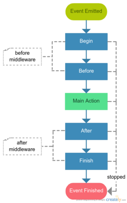

Event System Architecture¶
The Webino™ architecture is event driven, thus extensible. We can attach listeners to events, performing other operations as they trigger.
Event Lifecycle¶
The basic idea around events is that we just trigger an event and every action happens in listeners, even the main action. Then we can listen to that event using priorities, if we want to act like a middleware. The event propagation could be stopped at any time.
Using events like someEvent.pre and someEvent.post or someEvent.before, someEvent.after, it doesn’t matter, is messy and not recommended, don’t do that. Give an event a unique name then attach listeners using priorities. Convenient way to do that is to use an event priority constants.
Event Listeners¶
The event listener is a callable piece of code that can perform actions when event is emitted. It is allowed to register an event listeners in some different ways.
Closure Listener¶
The closure listener is the fastest created listener, but not the best practice at all.
use WebinoEventLib\Event;
$app->bind('someEvent', function (Event $event) {
// do something...
});
Invokable Listener¶
The invokable listener is a class that its object can be called like a function.
use WebinoEventLib\Event;
class MyInvokableListener
{
public function __invoke(Event $event)
{
// do something...
}
}
// lazy loading
$app->bind('someEvent', MyInvokableListener::class);
// as object
$app->bind('someEvent', new MyInvokableListener);
Listener Aggregate¶
The listener aggregate is a class that registers other listeners in a batch.
use WebinoEventLib\Event;
use WebinoEventLib\Listener\AbstractListener;
class MyListenerAggregate extends AbstractListener
{
protected function init()
{
// handle an event by itself
$this->listen('someEvent', 'onSomeEvent');
// handle an event by closure
$this->listen('someEvent', function (Event $event) {
// do something...
});
// handle an event by invokable
$this->listen('someEvent', SomeInvokableListener::class);
// handle an event by its collaborator
$eventProcessor = new \MyEventProcessor;
$this->listen('someEvent', [$eventProcessor, 'onEvent']);
}
public function onSomeEvent(Event $event)
{
// do something...
}
}
// lazy loading
$app->bind(MyListenerAggregate::class);
// as object
$app->bind(new MyListenerAggregate);
Registering listener aggregates via application config.
use WebinoAppLib\Feature\Listener;
Webino::config([
// invokable
new Listener(MyListenerAggregate::class),
// factory
new Listener(MyListenerAggregate::class, MyListenerAggregateFactory::class),
]);
Core Listeners¶
Core listeners can even listen to the application bootstrap first pass and configure events. They are registered into the core configuration and they can modify application configuration.
Poznámka
Only core services are available to core listeners before application is fully bootstrapped.
Registering core listener aggregate via application config.
use WebinoAppLib\Feature\CoreListener;
Webino::config([
// invokable
new CoreListener(MyListenerAggregate::class),
// factory
new CoreListener(MyListenerAggregate::class, MyListenerAggregateFactory::class),
]);